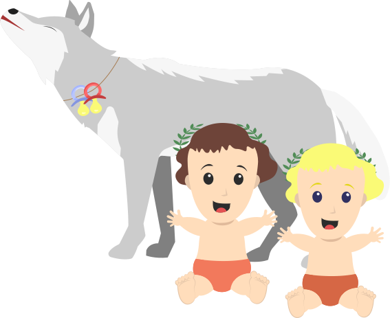
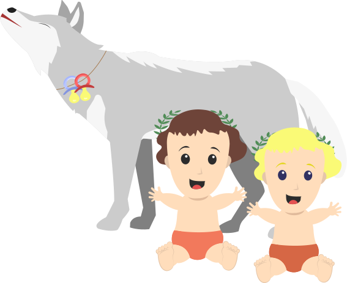

In Italien herrschte ein König namens Numitor, der von seinem Bruder entthront wurde. Der Bruder ergriff die Macht und zwang Numitors Tochter, Rhea Silva, zur Priesterin, um sicherzustellen, dass sie keine Kinder bekam. Allerdings mischte sich der Kriegsgott Mars ein und zeugte mit Rhea Silva Zwillinge namens Romulus und Remus. Der König befahl, die Zwillinge auf dem Tiber auszusetzen, um zu verhindern, dass sie ihm einmal den Thron streitig machen würden. Statt zu ertrinken, wurden die Zwillinge von einer Wölfin gefunden, die sie wie ihre eigenen Jungen aufzog. Später wurden sie von einem Hirten entdeckt und aufgenommen. Als Romulus und Remus erwachsen wurden, beschlossen sie, an dem Ort, an dem die Wölfin sie gefunden hatte, eine Stadt zu gründen. Im Jahr 753 v. Chr. begannen sie mit dem Bau einer Mauer um das zukünftige Stadtgebiet. Während des Baus der Mauer kam es zu einem Streit darüber, wer in der neuen Stadt herrschen sollte. Remus verspottete Romulus, indem er über die noch niedrige Mauer sprang. Dies verärgerte Romulus, der daraufhin seinen Bruder erschlug. Romulus wurde zum Gründer der Stadt und nannte sie Rom nach seinem eigenen Namen. Nach Romulus folgten sechs weitere Könige, und der letzte König namens Superbus (der Hochmütige) wurde gestürzt. Seitdem gab es in Rom keine Könige mehr. Wer sich als Alleinherrscher aufspielen wollte, lief Gefahr, sein Leben zu verlieren.
Geschichte Roms
vom Dorf zur Weltmacht
Jean-Luc Makiola - Justus Freund - Hannes Schellenberg - Jannik (L)Ostwald
Roms Gründung
der Mythos
 
